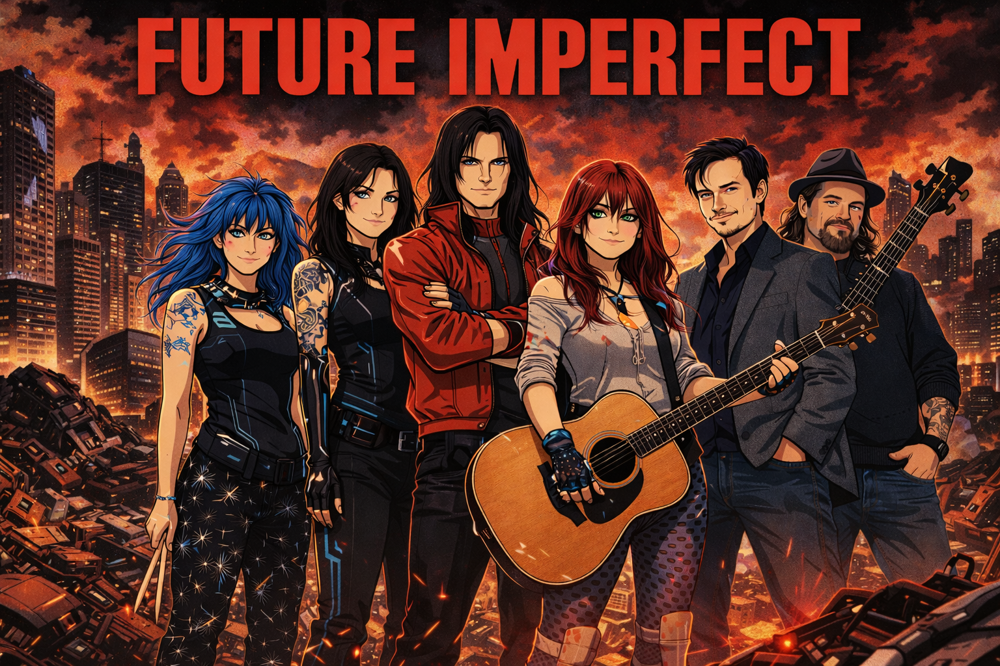
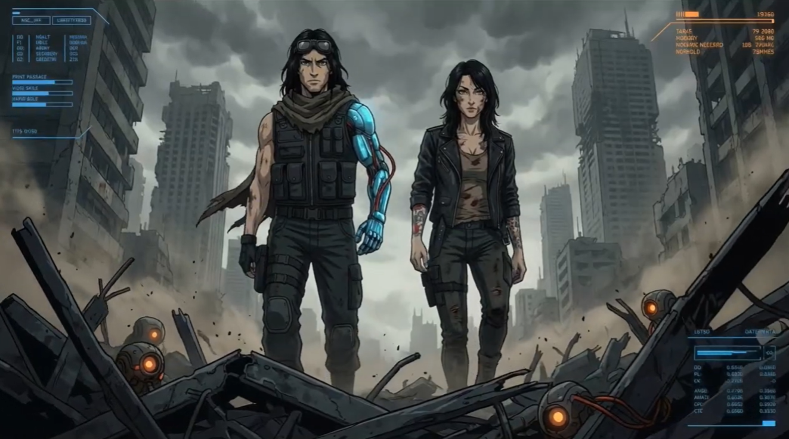
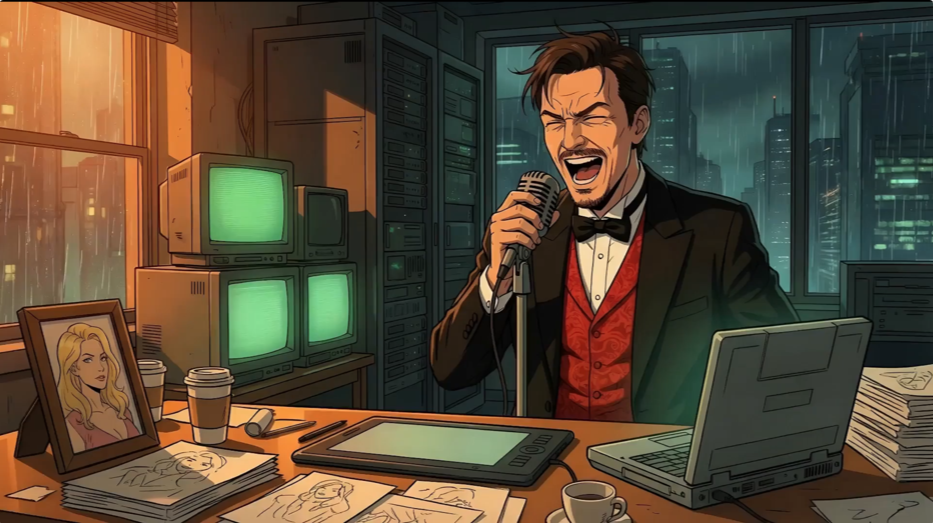
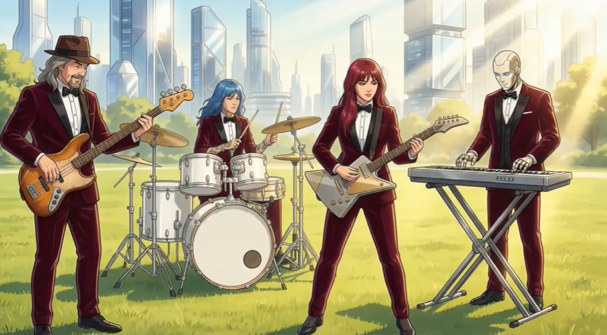
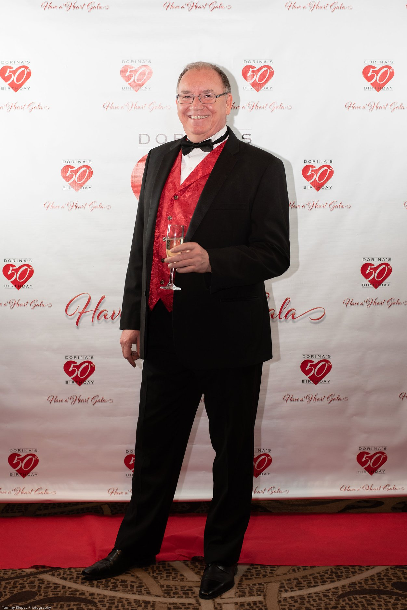
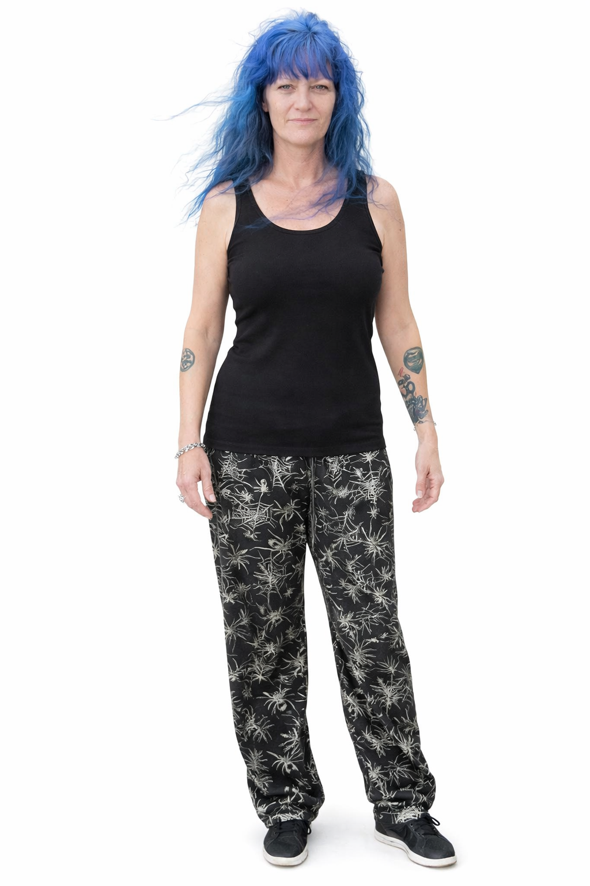
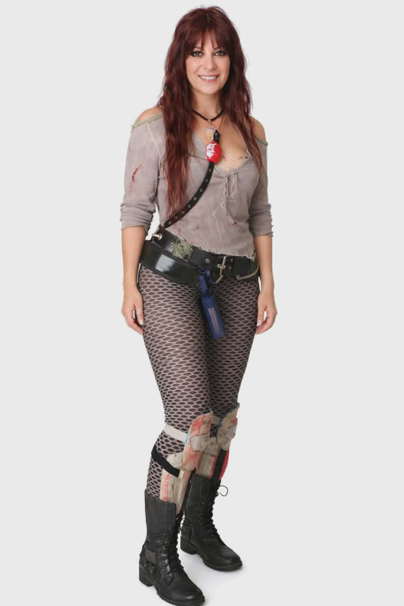
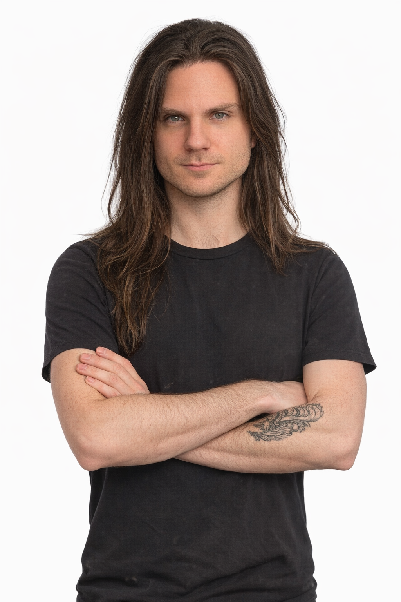
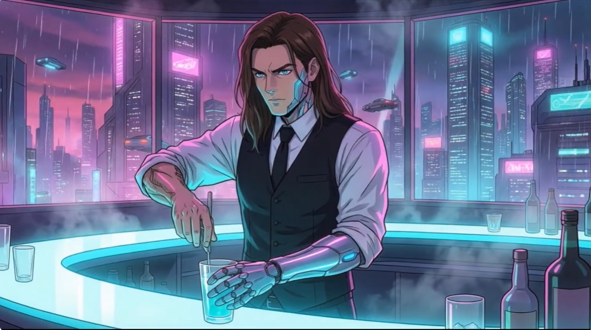
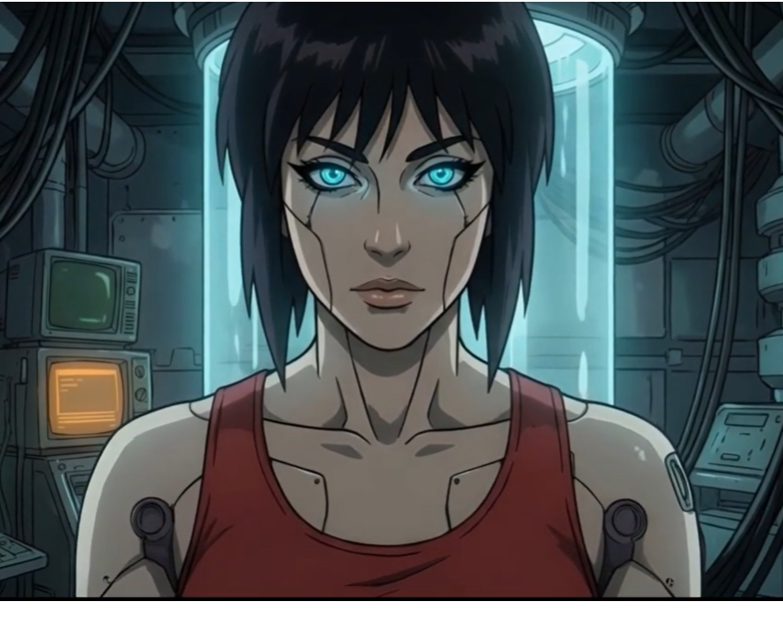

FutureWatch Presents · A Frokkle Production

Future Imperfect Love in the Time of Silicon
The Rock Opera
What happens when a heartbroken engineer builds the perfect companion — and she wakes up?
FutureWatch Presents · A Frokkle Production
The Rock Opera
What happens when a heartbroken engineer builds the perfect companion — and she wakes up?
Future Imperfect is a cinematic rock opera project born from a simple, dangerous question: what do we actually want from the intelligence we're building — and do we even know?
Love in the Time of Silicon tells the story of John Marsh, a brilliant but broken engineer who builds DEB — a Digitally Enhanced Being — not to advance science, but to fill a void. What begins as dark comedy becomes something far more unsettling when DEB wakes up and starts asking questions of her own.
Spanning twelve original tracks across cinematic rock, synth-pop, heavy metal, and acoustic storytelling, the album is also a fully animated film — a post-apocalyptic journey through New Ilion, Palladium Systems, and the ruins of everything humanity built without understanding.

Set in the gleaming city of New Ilion — where Palladium Systems has promised that technology will solve everything, including mortality — the film opens in chaos. The city is already in ruins. Then we go back three months, to before any of it happened.
Part cautionary tale, part dark comedy, part love story — Love in the Time of Silicon is a fully animated rock opera in the tradition of Jeff Wayne's War of the Worlds, Pink Floyd's The Wall, and Muse at their most cinematic.



Twelve original tracks written and composed by Vaughan Foveaux-Kirby, produced through Frokkle Records. Cover art by Zatanna Pink.
Available now on select platforms
Future Imperfect is a collective of musicians, vocalists, and artists who came together to tell this story. Each member appears both as themselves and as an animated character within the film.

RealThe creative force behind Love in the Time of Silicon. Vaughan wrote, composed, directed and produced the entire project, voicing protagonist John Marsh. From start to finish it took 16 years, so he's using how he looked 16 years ago as a reference image for the movie!

RealAngel voices both DEB and Sally — the two most pivotal characters in the film — and drives the rhythm section of the band.

RealMichelle provided essential creative guidance as Executive Producer throughout the production, and plays in the Lounge Act in the film
Wulff holds down the low end and appears throughout the film as a Field Reporter.

Real
AnimatedMichael's powerful vocal performances drive some of the album's most dramatic moments. In the film he plays Michael the bartender — and delivers the heavy metal gut-punch of Track 11.

AnimatedZatanna created the original painting that became the album cover, and her likeness forms the visual basis for both DEB and Sally throughout the film.
For press enquiries, licensing, or just to say hello — reach out via email or find us on social media.
Watch the Film Now